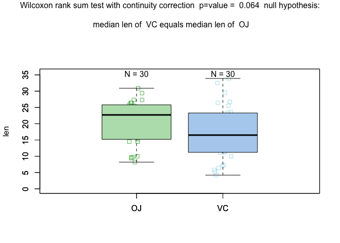
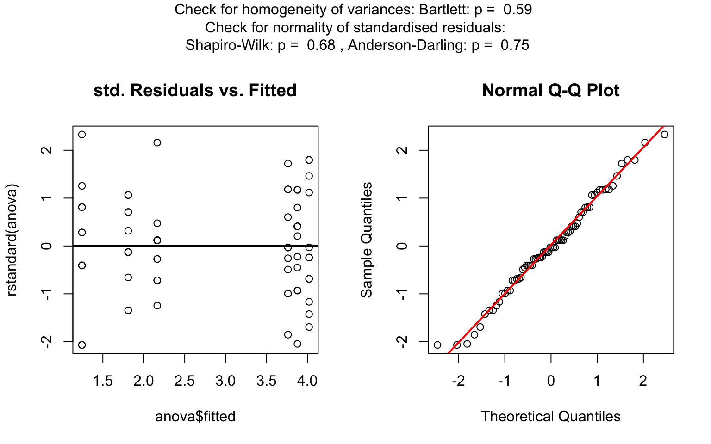
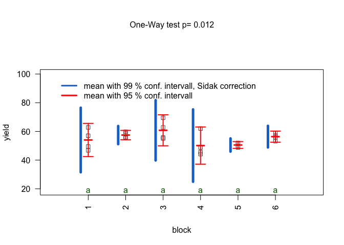
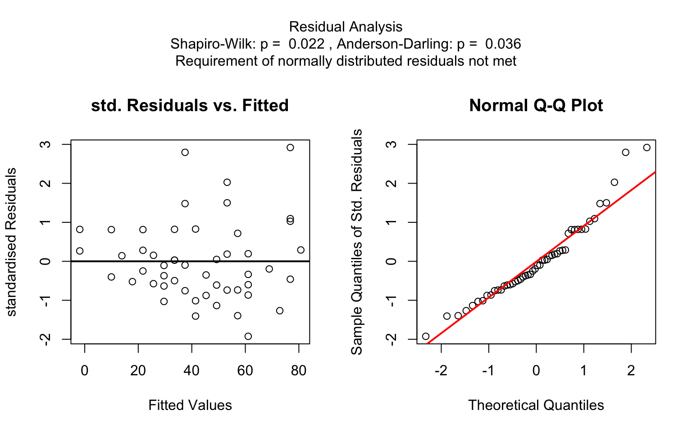
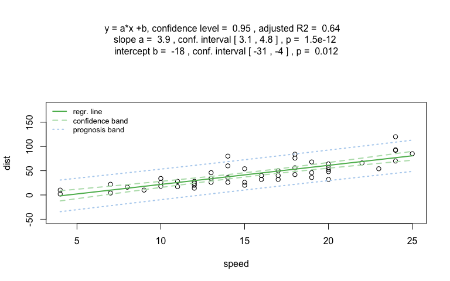
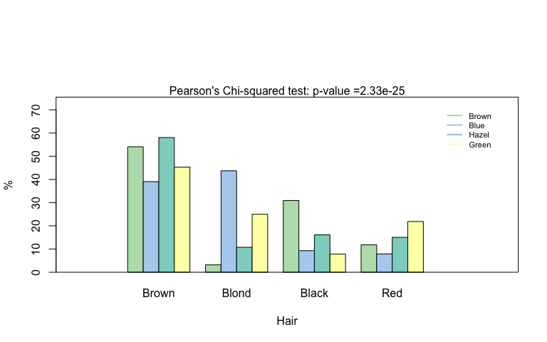
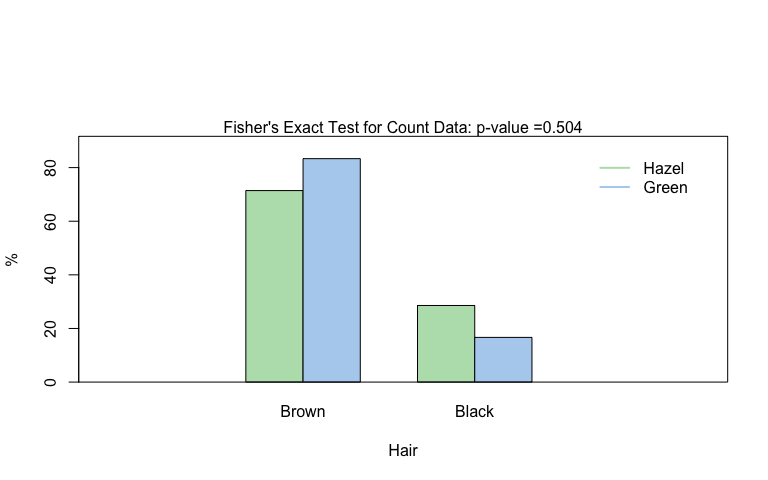
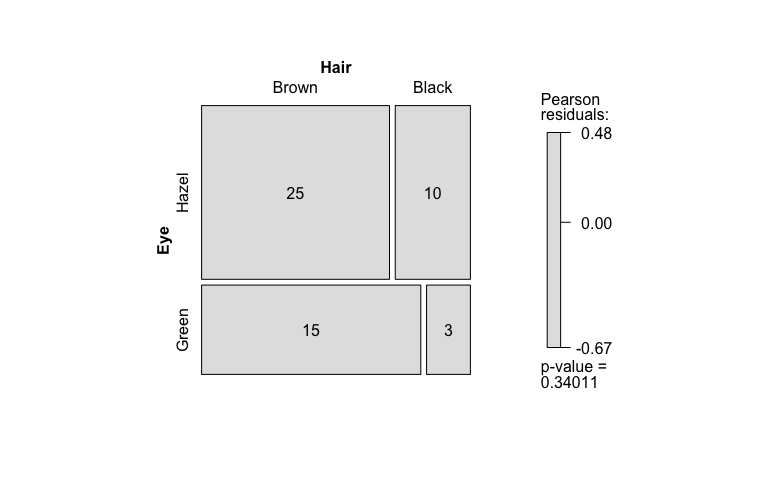

Visualization of a statistical hypothesis test selected to be valid under the data???s type, distribution, sample size, and confidence level
visStatistics is an R package for rapid visualization and statistical analysis of raw data. It automatically selects and applies a hypothesis test that is valid for evaluating the relationship between a response (varsample) and a feature (varfactor) within a data.frame.
A minimal function call looks of its main function visstat() looks like:
The input must be a column-based data.frame, and varsample and varfactor are character strings naming columns of that data frame.
The function selects a statistical test based on the class of the response and feature variables, the number of levels in categorical variables, and assumptions such as normality and homoscedasticity as well as the chosen ‘conf.level’.
The automatically generated output figures illustrate the selected statistical test, display the main test statistics, and include assumption checks and post hoc comparisons when applicable. The primary test results are returned as a list object.
This automated workflow is particularly suited for integration into browser-based interfaces or server-side R applications that interact with databases.
For a detailed description of the decision logic see
Installation of the developing version from GitHub
- Install devtools from CRAN if not already installed
- Load devtools
- Install the
visStatisticspackage from GitHub
- Load the package
- View help
Examples
Welch???s t-test

Wilcoxon rank sum test
grades_gender <- data.frame(
sex = as.factor(c(rep("girl", 21), rep("boy", 23))),
grade = c(
19.3, 18.1, 15.2, 18.3, 7.9, 6.2, 19.4,
20.3, 9.3, 11.3, 18.2, 17.5, 10.2, 20.1, 13.3, 17.2, 15.1, 16.2, 17.0,
16.5, 5.1, 15.3, 17.1, 14.8, 15.4, 14.4, 7.5, 15.5, 6.0, 17.4,7.3, 14.3,
13.5, 8.0, 19.5, 13.4, 17.9, 17.7, 16.4, 15.6, 17.3, 19.9, 4.4, 2.1
)
)
wilcoxon_statistics <- visstat(grades_gender, "grade", "sex")
ANOVA
insect_sprays_tr <- InsectSprays
insect_sprays_tr$count_sqrt <- sqrt(InsectSprays$count)
visstat(insect_sprays_tr, "count_sqrt", "spray")
Kruskal-Wallis test
The generated graphs can be saved in all available formats of the Cairo package. Here we save the graphical output of type ???pdf??? in the plotDirectory tempdir():
Linear Regression

Increasing the confidence level conf.level from the default 0.95 to 0.99 leads two wider confidence and prediction bands:


Pearson???s Chi-squared test
Count data sets are often presented as multidimensional arrays, so-called contingency tables, whereas visstat() requires a data.frame with a column structure. Arrays can be transformed to this column wise structure with the helper function counts_to_cases():
hair_eye_color_df <- counts_to_cases(as.data.frame(HairEyeColor))
visstat(hair_eye_color_df, "Hair", "Eye")
Fisher???s exact test
hair_eye_color_male <- HairEyeColor[, , 1]
# Slice out a 2 by 2 contingency table
black_brown_hazel_green_male <- hair_eye_color_male[1:2, 3:4]
#Transform to data frame
black_brown_hazel_green_male <- counts_to_cases(as.data.frame(black_brown_hazel_green_male))
# Fisher test
fisher_stats <- visstat(black_brown_hazel_green_male, "Hair", "Eye")
Implemented tests
Data of class "numeric" or "integer" are referred to as numerical, while data of class "factor" are referred to as categorical.
Numerical response ~ categorical feature
When the response is numerical and the feature is categorical, test of central tendencies are selected:
t.test(), wilcox.test(), aov(), oneway.test(),kruskal.test()
Normality assumption check
shapiro.test() and ad.test()
Post-hoc tests
-
TukeyHSD()(foraov()andoneway.test()) -
pairwise.wilcox.test()(forkruskal.test())
The decision below tree summarizes the underlying decision logic for tests of central tendencies.

Decision tree used to select the appropriate statistical test for a categorical predictor and numerical response, based on the number of factor levels, normality and homoscedasticity.
Numerical response ~ numerical feature
When both the response and feature are numerical, a simple linear regression model is fitted:
Categorical response ~ categorical predictor
When both variables are categorical, visstat() tests the null hypothesis of independence using one of the following:
-
chisq.test()(default for larger samples) -
fisher.test()(used for small expected cell counts based on Cochran???s rule)